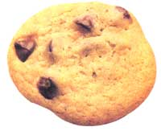
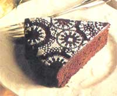
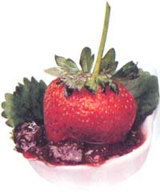

NATURAL HEALTH
Forget the granola bars; you can have your cake and eat it too.
Holiday cookies are frequently rich in fat, cholesterol, and sugar, and are poor in nutrition. While it can be tricky to cut down on fat and sugar without creating big, soggy blobs, there are several ways that you can make cookies healthier without sacrificing taste and texture.
There are people who are counting down to Christmas right now. Of course, they are either under the age of 14 or they've bought-and wrapped-their holiday gifts by Labor Day. Others will be frantically baking cookies on Christmas Eve, and then wrapping presents in Sunday comics (or anything else resembling wrapping paper). As a member of the latter group, I speak for all of us when I say-we too are waiting for the big day. In fact, we'll be waiting until the last possible minute.
Then there's that old weight-gaining tradition to consider. With all the last minute aerobic shopping, one would expect to lose 10 pounds or so by Christmas Eve. This never happens though; there are always those few extra pounds roaming around, waiting to suction themselves onto body parts while you're not looking. You can stall the pounds by baking cookies but not eating them (impossible), declining all rich desserts and taking up jogging. But that's not exactly celebrating, now, is it? Holidays are meant to be a time of perpetual feasting, celebrating with family and friends.
And how about those time-consuming-and frequently frustrating-holiday traditions we adhere to so dearly? Take the Christmas tree, for example, my own holiday hang-up. I must have a beautifully decorated tree in my living room or Christmas can't occur. One winter, I convinced my husband to accompany my son and me on our annual tree hunt. We dressed for the Arctic and spent hours searching through heaping piles of affordable trees... until we found it-the perfectly shaped tree, the one that would make the relatives weep.
How to avoid those extra holiday pounds? There's always jogging, but that's
not exactly celebrating, now, is it?
My husband hauled the giant pine home, lugged it upstairs, and attempted to place it into the tree stand. Let me tell you, the Sequoia-size trunk would not have fit into the Jolly Green Giant’s tree stand. So my husband hauled the tree back outside for a little strenuous sawing. When we finally managed to wedge the tree into the stand, we discovered it had grown on a slant. It was now leaning to the left-at a 45° angle. No problem. Being a resourceful guy, my husband remedied the situation by tying the tree to a nearby curtain rod with a long piece of kite string to straighten it out. It made quite a nice conversation piece over the holidays. Still, my husband officially retired from the tree ritual forever-that is, of course, until next year.
Baking cookies is one of the all-time great rituals of the holiday season. You can place them around the house, stick them in colorful gift tins, you can pretty much avoid the shopping frenzy. The only problem is that holiday cookies are rich in fat, cholesterol, and sugar, and are poor in nutritional content. But who wants to serve granola bars on Christmas Eve? There are ways we can have our cake and eat it too. All we need to do is reduce the pound of butter and sugar in our favorite recipes, throw in some whole grains instead of refined flour, and we're on our way to healthier holidays. While it can be tricky to cut down on fat and sugar without creating big, soggy blobs, here are some ways to make cookies healthier without sacrificing taste and texture:
•Cut down on the sugar. (No one will even notice.) If it calls for one cup, use ¾ cup.
• Use extracts such as rum, almond, peppermint, and vanilla to enhance flavor.
• Cream together equal parts of vegetable oil (or canola oil) with butter for a lower cholesterol cookie.
• Use whole grains or seeds (such as oats or sunflower seeds) instead of nuts.
•Use dried fruit, dates, raisins, and currants to sweeten cookies.
• Use frozen apple juice concentrate or orange juice and orange rind to sweeten instead of sugar.
Kay Stepkin of "The Bread Shop" in Chicago has mastered cookie baking in her 21 years in the business. She prepares whole grain, sugarless bakery goods and provides healthy alternatives to baking treats without compromising ingredients. Here are a few favorites for you try. Freeze cookies instead of storing them for weeks in tins-they'll taste fresher.
¼ pound butter (1 stick)
¼ cup honey
1 egg, beaten
1 teaspoon vanilla
3 cups plus 2 tablespoons
whole-wheat flour
dash salt
date sugar (available at health food stores)
Preheat oven to 350°F. Cream together butter, honey, egg, and vanilla. Add flour and salt. Scoop out dough with a cookie scoop or soup spoon. Press into flat circles on a greased cookie sheet. Sprinkle date sugar on top, and bake for about 12 minutes, until they are light brown around the edges.
¼ cup peanut oil
¼ cup maple syrup
1 teaspoon rum (or 1 teaspoon rum extract)
3 ounces chocolate chips (about ½ cup before melting)
½ cups sifted whole-wheat pastry flour
¼ teaspoon baking soda
¼ cup chopped pecans
Preheat oven to 350°F. Mix wet ingredients together; then combine dry ingredients. Stir the dry ingredients into the wet mixture. Scoop with a cookie scoop onto a non-stick or greased cookie sheet. Don't press cookies down; they will spread out. Bake for 11 to 15 minutes.
6 tablespoons butter
(or soy margarine)
¼ cup plus 1 tablespoon maple syrup or honey
¼ cup fruit juice concentrate (apple)
½ teaspoon vanilla
2½ cups whole-wheat pastry flour
*4 ounces (approximately ¾ cup) carob or chocolate chips
1/3 cup chopped walnuts
½ teaspoon baking powder
¼ teaspoon salt
Preheat oven to 350°F. Cream butter with honey or maple syrup. Mix in the juice concentrate and vanilla; then mix dry ingredients. Stir into wet mixture. Scoop out with a cookie scoop or roll into one-inch balls, and then press flat. Bake for approximately 13 minutes or until light brown.
*Sunspire chocolate chips are barley malt sweetened.
1 cup mixed dried fruit, chopped
1 cup chopped dates
1 cup raisins
½ cup chopped walnuts
¼ cup fruit juice
concentrate
dash salt
flaked coconut or finely
chopped nuts
Combine all ingredients. Form into one-inch balls; roll in coconut or finely chopped nuts. Store on waxed paper.
I've made this six-layer cake almost every December. It not only tastes delicious, but it's positively elegant. It is also a rich cake; a thin slice goes a long way. If you don't own six cake pans, make three layers at a time. The recipe below is for one batch.
3 eggs
1/3 cup honey
1/3 cup oil
1¼ cups buttermilk
1 teaspoon vanilla
1 tablespoon Amaretto
(or 1 teaspoon almond extract)
½ cup carob powder (not carob drink)
1½ cups sifted whole-wheat pastry flour
½ teaspoon baking powder
1 teaspoon baking soda
Preheat oven to 350°F.
Cookies are one of the all-time great holiday traditions, and there are lots of ways to
make them both healthy and delicious.
Using an electric mixer, beat eggs, honey, oil, buttermilk, vanilla, Amaretto, and carob powder until well mixed. Add flour, baking powder, and baking soda; beat until just blended. Pour into three eight-inch pans lined with waxed paper. Cut into eight-inch circles. Bake for 12 to 15 minutes. A toothpick inserted in the center should come out clean. Don't overcook. The layers will only be about an inch high. Cool for at least 10 minutes before removing from the pans. Don't remove the waxed paper from the layers until they're thoroughly cooled. Cut more waxed paper to fit the three cake pans and then make up another batch.
Frosting:
1½ pints cold hipping cream
1 teaspoon vanilla
2 tablespoons Amaretto (or
1 teaspoon almond extract)
1 to 2 tablespoons sifted carob powder
2 to 3 tablespoons fructose (fruit sugar)
sliced almonds
Chill the bowl and beaters first. Beat whipping cream until almost stiff. Add remaining ingredients to taste. Mix briefly.
Assembly.
Put the first cake layer, top side up, on a platter and then thinly frost. Repeat with next five layers. Frost sides and top and press sliced almonds around the edge of the cake. Chill until serving time.
This cake is always a success. For a festive look, place the cake, top side up, on a platter. Just before serving, place an eight to 10 inch doily on the top. Using a flour-free sifter, sift confectioners sugar lightly over the top to create a stenciled design. Remove doily.
1/3 cup oil (I prefer canola.)
1/3 cup plus one tablespoon
sorghum molasses (must be sorghum)
1 tablespoon brown sugar
1 egg
½ teaspoon baking soda
1 teaspoon cinnamon
¼ teaspoon allspice
1/8 teaspoon cardamom
½ teaspoon powdered mustard
2 teaspoons fresh ginger root juice (press the root through a garlic press) or 1 teaspoon powdered ginger
2 cups whole-wheat pastry flour, sifted
1½ teaspoons baking
powder
¼ strong hot coffee
½ cup hot water
Preheat oven to 350°F. Using an electric mixer, beat together all the ingredients up to and including the ginger juice until well blended. Add flour, baking powder, coffee, and water. Beat on low speed for about a minute until well blended. Pour into a greased round nine-inch cake pan. Bake for 30 to 35 minutes or until a toothpick inserted in the center comes out clean, and cool on a wire rack. Loosen the cake around the edges and underneath a bit with a table knife before inverting onto a plate, then invert again onto a serving platter. The only problem now is keeping prying hands away until you serve!
|
 STAAN SHOLICK |
 STEVEN MARK NEEDHAM/ENVISION |
 PHOTOBANK |